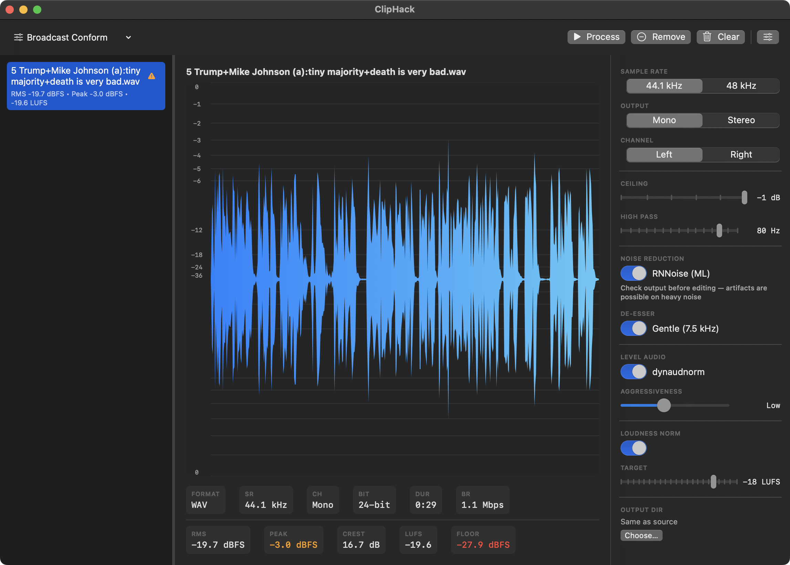
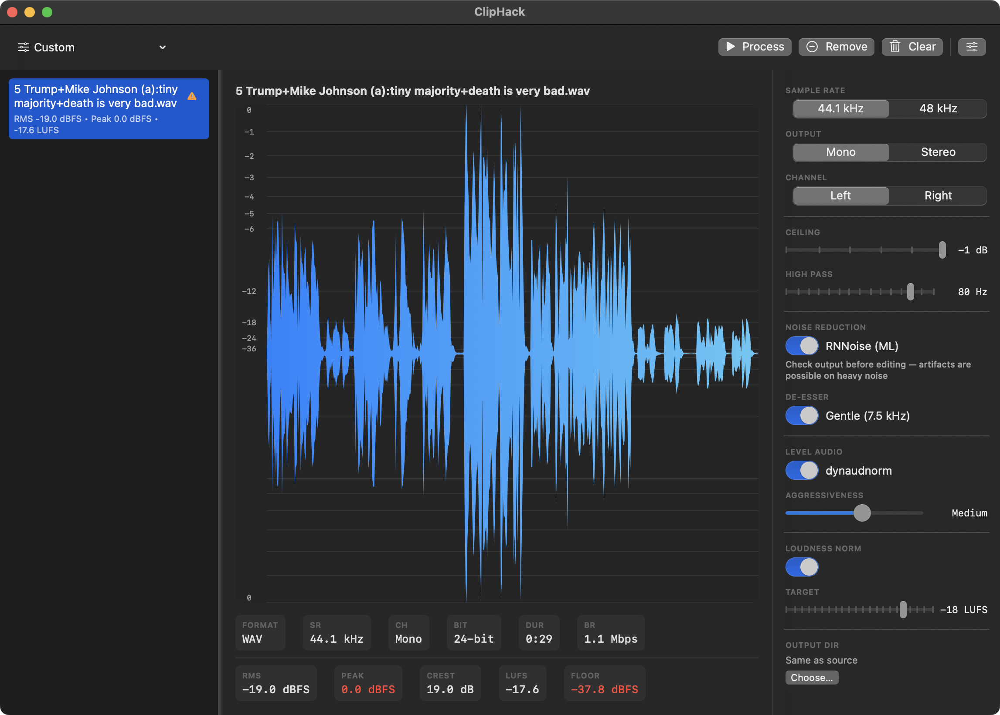
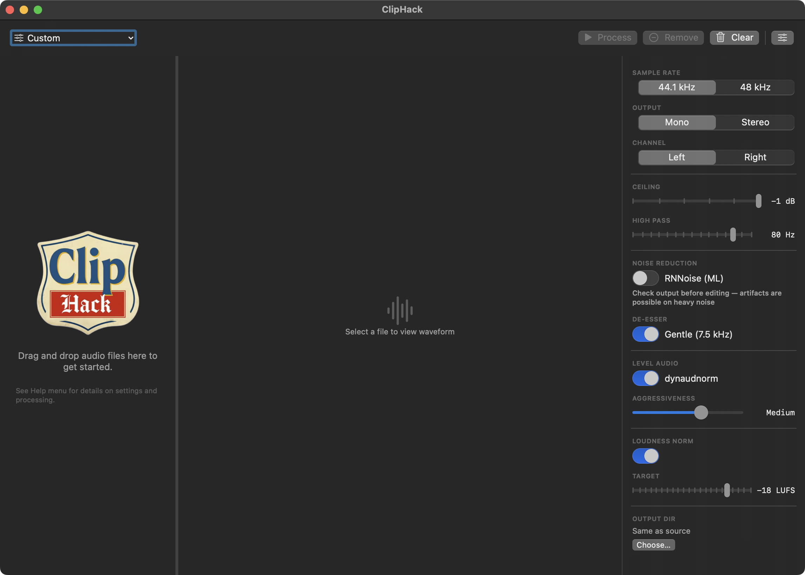

Broadcast Clip Prep for macOS
Prepares broadcast clips for use in a mix. Drop in a news clip, promo, or insert — ClipHack levels the dynamics, normalizes loudness, and brick-wall limits peaks in one pass.
macOS 14 Sonoma or later · Apple Silicon & Intel · Free
For your own raw recordings before editing, use WaxOn.
Preset picker in the header recalls all settings at once. Waveform, file stats, and color-coded peak and noise floor warnings shown inline.

Stats update after processing so you can compare input and output levels at a glance. Peak, RMS, LUFS, crest factor, and noise floor — all without leaving the app.

Configure your settings once, then drop files in. ClipHack processes each file in sequence — queue up a batch and walk away.

Each stage is optional — except the final limiter. Run what you need, skip what you don't.
RNNoise neural network model (arnndn) — removes broadband background noise: hiss, room tone, HVAC. Applied per-channel on stereo files so the stereo image survives intact.
Dynamic leveling via FFmpeg's dynaudnorm — evens out level variation across a clip without compressor pumping. Five aggressiveness presets from Gentle to Aggressive.
Two-pass EBU R128 loudness normalization to a configurable target (−30 to −14 LUFS). Linear gain only — dynamics are fully preserved. −16 LUFS is a common podcast insertion target.
2× oversampled true peak limiting at a configurable ceiling (−6 to −1 dB). Always applied as the final stage. Keeps transients honest without audible artifacts.
For mono output, choose Left or Right. Uses an explicit pan filter — not a downmix average — so you get exactly the channel you want.
Optionally force stereo output. Upmixes mono sources to dual-mono stereo. When off, all output is mono — useful for clips that only need a single channel.
Full ITU-R BS.1770 gated loudness displayed per file after analysis. Noise floor detection warns when high background noise may affect level accuracy.
Drop multiple files at once. ClipHack processes them in parallel with per-file progress. Drag and drop onto the window or use the file list directly.
Output: {name}-{rate}{nr-}{leveled-}{norm-}clipped-{limit}dB.wav · 24-bit WAV
Every stage runs in sequence. Noise reduction comes first so the leveler and normalizer see clean audio. The limiter is always last.
Supported formats: WAV, AIFF, AIF, MP3, FLAC, M4A, OGG, Opus, CAF, WMA, AAC, MP4, MOV. FFmpeg is bundled — no separate installation required.
Bug report, feature request, or just found it useful? Send a note.
Message sent. Thanks.